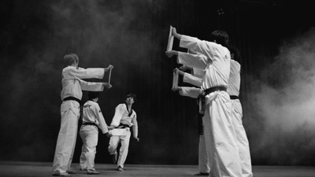
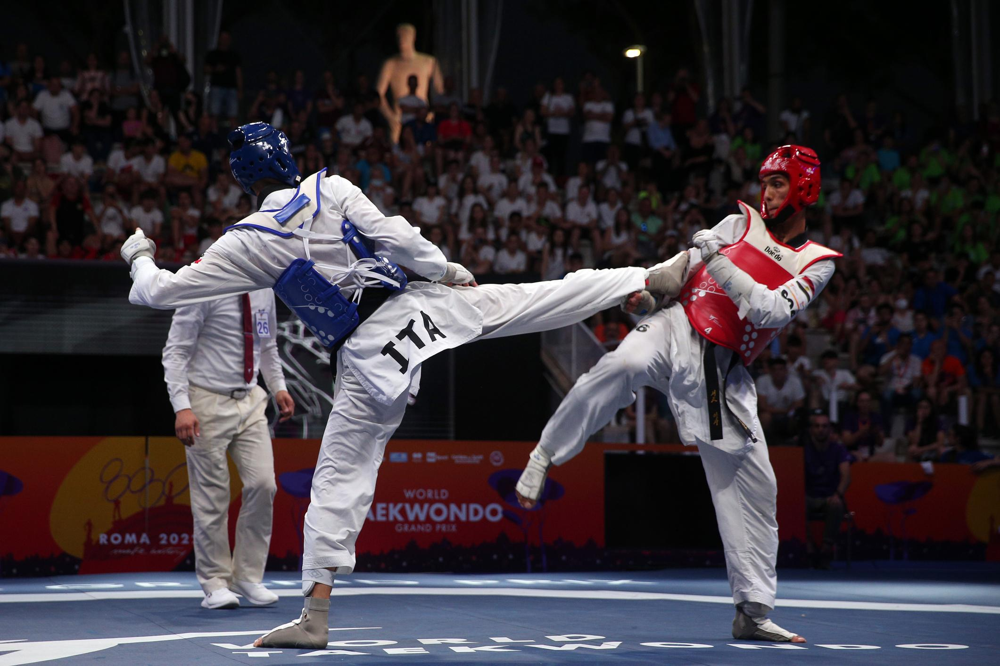

El taekwondo2 o taekuondo3 (en hangul, 태권도; pronunciado tʰɛ.k’wən.do)4 es un arte marcial de origen coreano fundada en 1955 por el general Choi Hong Hi. Posteriormente, tras la unificación de varios kwans o escuelas coreanas de artes marciales, se forma la KTA (Korea Taekwondo Association) para dar fundación el 22 de marzo de 1966 a la Federación Internacional de Taekwondo (ITF), posteriormente autoexiliado el general Choi Hong Hi a Canadá. En el año 1973 la World Taekwon-Do Federación es fundada en Corea del Sur siendo esta la organización que convierte al taekwondo en deporte olímpico de arte y combate durante los Juegos Olímpicos de Seúl 1988, donde fue presentado como deporte de exhibición, hasta su reconocimiento deportivo olímpico en los Juegos Olímpicos de Sídney 2000. Si bien existen tres escuelas(ITF, WT y ATA), con diferencias en las modalidades de competencia (combate y formas), el estilo promovido por la WT (Taekwondo Mundial) es reconocido como deporte olímpico, mientras que el estilo promovido por la ITF (Federación Internacional de Taekwondo) y la ATA(ATA Martial Arts) también desarrollan sus propios campeonatos mundiales como disciplina deportiva, sin olvidar la parte marcial. Dentro de las artes marciales y deportes de combate, el taekwondo destaca por la variedad y espectacularidad de sus técnicas de patadas, siendo una de las artes marciales más efectivas y conocidas del mundo.  Para su creación, el general Choi se basó en el arte coreano del taekkyon (que influyó en la forma de realización de varios de los golpes con el pie y en el trabajo táctico o de pasos y desplazamientos), así como en el karate-Do japonés (de donde provienen los golpes con el puño y a mano abierta, la planimetría o división por zonas del cuerpo humano, los bloqueos, las posiciones y el sistema de grados por cinturones de colores kup-dan). De esta disciplina también se derivan su primer uniforme y sus primeras formas o esquemas conocidas como hyong en la ITF (International Taekwon-Do Federation) y como palgwe en la WT (World Taekwondo). Estas primeras formas han sido reemplazadas por las formas tul en la ITF, y por las formas taeguk en la WT, con el fin de afianzar más su propia identidad, frente a las disciplinas de donde proviene. Al practicante de esta disciplina se le denomina taekuondista o taekwondista —forma mayoritaria y preferible según la Fundación del Español Urgente—, taekwondoka —por analogía con judoka o karateka— o taekwondoin —semejante a la denominación en coreano—.5 El taekwondo se considera un método que busca acondicionar el cuerpo y potenciarlo físicamente, además del desarrollo de la voluntad y la sabiduría por medio de la experiencia. Basándose en las diversas leyes físicas para generar la máxima potencia, enfocándola de manera precisa, mediante la aceleración de la masa corporal.
Los maestros e instructores coreanos, debido a su fuerte nacionalismo y resentimiento tras la ocupación japonesa por 35 años (1910-1945), (periodo donde muchos de los maestros precursores del arte se entrenaron en karate, judo o kendo) según Park (1993, p. 241–274): y tras la guerra de Corea (1950-1953) donde se produjo la división actual del país en Corea del Norte, y Corea del Sur, ubican los orígenes del taekwondo remontándose al año 50 d. C., a la práctica del arte marcial nativo llamado taekkyon, arte aún practicado, que incluso ha sido declarado patrimonio inmaterial de la humanidad por las Naciones Unidas.67 La evidencia de su práctica fue hallada en tumbas antiguas por arqueólogos japoneses durante la ocupación, donde algunas pinturas murales mostraban a dos hombres en una escena de pelea.8
